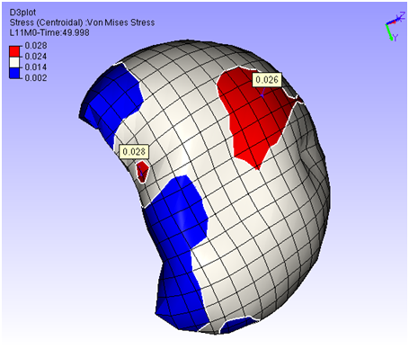

Hotspot Finder
The Hotspot finder tool allows VCollab Presenter users to define hotspots and find regional hotspots.
Hotspot Finder Panel
The various options and fields that are available under Hotspot finder are explained below.
| Find | Users can choose from any one option from the drop down list
To know more about Local and Global Extrema, click here. |
| Min | Specify the minimum range. |
| Max | Specify the maximum range. |
| Top | Used to find the number of top result values. Top labels are highlighted by red color border by default. Users can change the color. |
| Bottom | Used to find the number of bottom result values. Bottom labels are highlighted by blue color border by default. Users can change the color. |
| All Top | Includes all same top values and its IDs. |
| All Bottom | Includes all same bottom values and its IDs. |
| Mark MinMax | highlights the labels of max. of top values and min. of bottom labels. Max. & Min labels are highlighted with text colors of Red and Blue respectively. |
| Zone Radius | Used to skip an area around already found hotspots. |
| Visible Surfaces | Considers visible labels only. |
| Probe Label Settings | Used to keep previously found labels in manual hotspots finding. |
| Compare Options | This option is visible if at least one file is merged with existing one. It displays column wise comparison for merged data. |
| Add Viewpoints | Generates viewpoints according to viewpoint options if enabled. |
| Export | Exports the viewpoints into either vpt file or microsoft ppt file. While adding view path users will be prompt for file name and file type. |
| View Point Options | Provides various options to include or exclude different type of viewpoints |
| Find Hotspots | Generates viewpoints with hotspots. It is an automatic process. |
Steps to find hotspots?
Define hotspots using Hotspot Finder panel options.
Click the hotspot finder icon in the toolbar.
Select a region to find hotspots either by drawing a rectangular window or by polygon selection.
If polygon selection is off, then selection default is by rectangular window.

Drag mouse to draw a rectangular selection on the model as below.
Window Selection

Polygon Selection

Computed hotspots are displayed as labels.
Hotspot Range Cluster
Cluster based on range.
Example: Consider the following airbag model,

For Top hotspot, range is defined by Filter Min value, ( 0.024 ). To visualize the cluster defined by (> 0.024) , enter the same value in Legend as in the image above. User can see two red clusters. This algorithm finds maximum value for each cluster and shows the labels.

Similarly for Bottom hotspot, range is defined by Filter Max value ( 0.014 ). To visualize the cluster defined by (< 0.014), enter the same value in Legend as in the image above. User can see three blue clusters. This algorithm finds minimum value for each cluster and shows the labels.